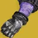

推荐者：
樱泽春花墨虚无镣铐/反转手虚空术
 术士 · 虚空 · 创意S29 · 凯旋纪念碑
术士 · 虚空 · 创意S29 · 凯旋纪念碑
遗愿4套效果配合金装回转技能拥有极其恐怖的重弹生产能力
适用环境
# 虚无镣铐/反转手虚空术 推荐人：樱泽春花墨 描述：遗愿4套效果配合金装回转技能拥有极其恐怖的重弹生产能力 更新：2026.9.10 场景：日常 分支：虚空 强度：创意 核心：虚无镣铐 ## 职业 职业：术士#row:elements/class-abilities/分节/术士 超能：新星炸弹：灾变#1656118682 星相：虚空供养#2321824284、混沌加速#2321824285 碎片：坚韧回声#2272984671、弱化回声#2272984668、饥饿回声#2661180603、驱逐回声#2272984665 手雷：散射手雷#1514173218 近战：口袋奇点#2299867342 职业技能：治愈裂痕#25156515 ## 武器 异域武器：真相#1201830623 传说武器：无誓#3462679024 | 边打边劫#3700496672、引爆光束#4198902903 传说武器：鲁莽神谕#1802315656 | 失衡弹药#2048641572、冲击支撑#776531651 ## 护甲 异域护甲：虚无镣铐#3982932616 套装：伟大狩猎#set:673904900 2 件 × 伟大狩猎#set:673904900 4 件 头盔：虚空虹吸#2773358872、弹药斥候#4294967297、弹药搜寻者#4294967296 护臂：火力无限#2485657760、火力无限#2485657760、火力无限#2485657760 胸甲：虚空抗性#3410844187、电弧抗性#953234331、震荡阻尼器#3719981603 腿部：恢复能量球#1039115606、虚空武器激涌#3467460423、虚空武器激涌#3467460423 职业物品：强力吸引#11126525、投弹手#4188291233、特殊终结技#4004774872 ## 神器 ## 六维 六维：生命 ~ ｜ 近战 ~ ｜ 手雷 200 ｜ 超能 ~ ｜ 职业 ~ ｜ 武器 ~ ## 注解 1、遗愿4件套手雷击杀给额外重弹进度，配合金装快速回转手雷，拥有极其夸张的重弹生产能力，重弹富裕到你甚至可以真相清怪，在之前三人大师梦魇老三实测，负责清怪的情况下，最后三人输出打完场上还有18盒重弹未使用，队友直呼没打过这么富裕的仗 2、伤害方面，神器虚空武器输能配合腿部2激涌可以常驻虚空激涌*4 3、生存方面，遗愿2件套效果击杀给予抵抗*1（10%减伤），配合神器吃裂口给覆盖护盾和星象碎片给的吞食，在宗师警戒和大师raid也能有不错的表现 4、无增益词条时金装使用虚无镣铐最佳，在有掷雷手增益的情况下反转之握最佳，手雷可以无限丢，手上三个手雷击杀产球，手雷扔怪堆可以产多颗能量球
职业
武器
护甲
- 生命~
- 近战~
- 手雷200
- 超能~
- 职业~
- 武器~
注解
1、遗愿4件套手雷击杀给额外重弹进度，配合金装快速回转手雷，拥有极其夸张的重弹生产能力，重弹富裕到你甚至可以真相清怪，在之前三人大师梦魇老三实测，负责清怪的情况下，最后三人输出打完场上还有18盒重弹未使用，队友直呼没打过这么富裕的仗
2、伤害方面，神器虚空武器输能配合腿部2激涌可以常驻虚空激涌4
3、生存方面，遗愿2件套效果击杀给予抵抗1（10%减伤），配合神器吃裂口给覆盖护盾和星象碎片给的吞食，在宗师警戒和大师raid也能有不错的表现
4、无增益词条时金装使用虚无镣铐最佳，在有掷雷手增益的情况下反转之握最佳，手雷可以无限丢，手上三个手雷击杀产球，手雷扔怪堆可以产多颗能量球